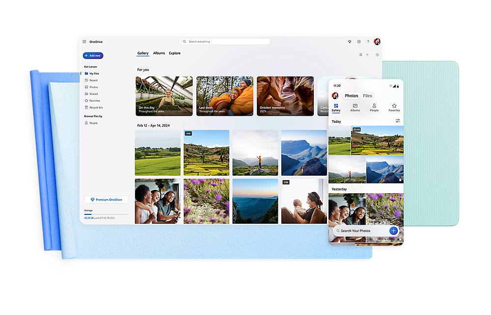
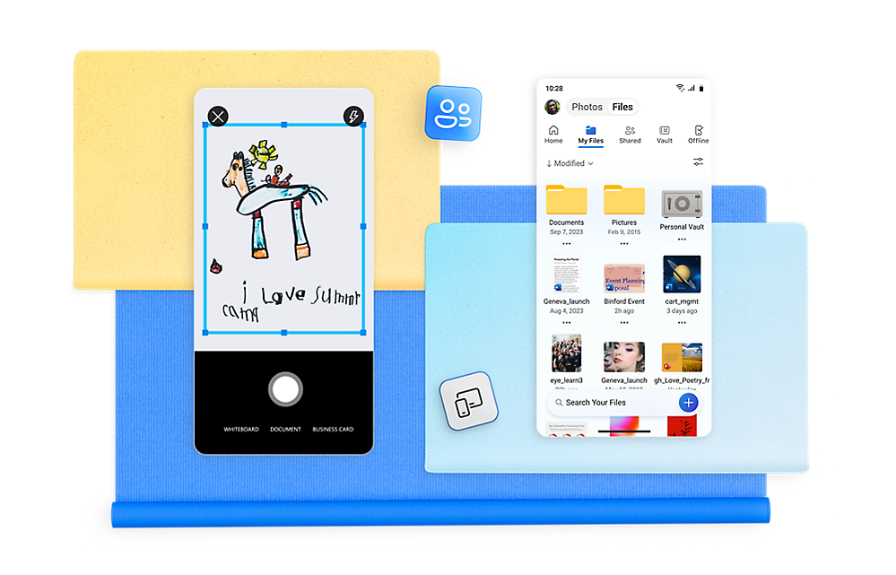

SkyDriveapp 深度盘点：不止是网盘，而是一套跨设备文件工作流
很多人把 SkyDriveapp 当成一个普通网盘用，但它的真正价值在于多端同步、自动备份、版本恢复和分享协作组成的完整闭环。本文从能力域角度系统梳理它能做什么、亮点在哪、哪些场景真正离不开它。
它到底是什么，为什么值得认真盘点
SkyDriveapp 就是微软的 OneDrive，它的官网上明确写着——这个定位决定了它不像某些主打大容量的网盘那样靠空间吸引人，而是把重心放在"文件在所有设备之间无缝流转"这件事上。很多人只用到了它最基础的云存储功能：把文件拖进同步文件夹，然后在另一台设备上打开。但如果仅此而已，那确实低估了它。
真正把 SkyDriveapp 用明白的人，会把它当成一套文件工作流的基础设施：电脑上的文档自动备份、手机拍的照片自动上传、分享给同事的链接能设过期时间、误删的文件能从回收站捞回来。这些能力不是零散功能的堆砌，而是围绕"让文件跟人走"这个核心逻辑编织出来的一张网。
这篇盘点就从能力域出发，把 SkyDriveapp 的能力面完整铺开——你会发现，其中不少亮点是别的工具没有或者做得没那么彻底的。

能力域一：多端同步与备份的完整链路
这是 SkyDriveapp 最核心、也是最常被人忽略的能力。它同时覆盖了两种备份需求：桌面端的文件同步和手机端的媒体备份，而且两端机制完全不同，各自针对场景做了优化。
桌面端：文件夹级实时同步
在 Windows 或 Mac 上从官方下载装好客户端后，系统托盘或菜单栏会多一个云朵图标。你的 OneDrive 文件夹（默认在用户目录下）就是一个双向同步节点——往里面放文件，云端自动上传；在另一台设备上往里面放文件，这台电脑自动下载。这个过程是实时的，大文件也有分块上传，不会等全部读完才开始。
更实用的是它的"文件夹备份"功能：可以把桌面、文档、图片这些常用目录直接指向 OneDrive，等同于让这些文件夹的所有内容自动拥有云端副本。很多人重装系统后发现资料全丢了，正是没开这个功能。
手机端：照片自动备份是刚需
手机版 SkyDriveapp 有一个和桌面端截然不同的定位：它不做自动文件同步，但会自动备份相机胶卷。登录后只要在设置里打开"相机胶卷备份"，手机拍的每一张新照片都会自动上传到云端的"相机胶卷"文件夹——不需要你手动打开应用、不需要选文件、甚至屏幕锁着的时候也能在 Wi-Fi 环境下后台上传。
这个差异很容易让人困惑：为什么桌面端同步、手机端不同步？答案很简单——手机存储有限，文件同步会让本地很快被占满，而照片备份恰恰是手机用户最需要的云服务。SkyDriveapp 选择用不同的机制分别服务桌面和移动场景，而不是用一套规则硬套两端。
能力域二：文件分享与权限体系
分享功能在 SkyDriveapp 里远不止"发个链接"那么简单。它提供了一个完整的权限阶梯，从公开资料到私密合同都能对应到合适的分享方式。
三种权限级别，对应用三种场景
SkyDriveapp 的分享链接有三档权限：任何人可查看适合公开资料和非敏感内容，拿到链接的人能看能下载但不能改；任何人可编辑适合协作文档，比如团队共同维护的表格或项目清单，多人可以在线编辑；仅限特定人员则是最安全的一档，只有你指定邮箱的 Microsoft 账户能访问，其他人就算拿到链接也打不开。
安全设置：密码和到期时间
在很多国内网盘里看不到的细节——SkyDriveapp 支持给分享链接加密码和过期日期。密码适合在论坛帖子这种公开渠道分享但又不想让路人都能看的场景；过期日期则解决了"忘记手动撤销分享"的尴尬，比如你给外包团队发一个资料链接，设成一周后自动失效，时间一到链接点进去就是无权限页面。
撤销分享比想象中重要
很多人把文件发出去就不管了，但 SkyDriveapp 允许你随时管理所有已分享的链接。在网页端的"管理访问权限"里，可以看到每个文件当前有哪些分享链接、分别是什么权限，一键就能撤销。撤销后链接立即失效——虽然别人已经下载到本地的文件你删不掉，但至少能阻止进一步传播。
能力域三：文件安全网——三种恢复机制
SkyDriveapp 可能是所有网盘中文件恢复体系最完整的。不是靠单一功能兜底，而是三层防线层层嵌套：
回收站是第一道防线，30 天内删除的文件都在这里，找回操作就是右键还原。从个人保管库删除的文件稍特殊——需要先解锁保管库才能在回收站看到，但找回逻辑一样。
版本历史是 Office 文档专属的第二层防线。如果你的 Word 或 Excel 被覆盖保存改错了内容，不用慌——在网页端找到文件右键点"版本历史"，能看到这份文档在不同时间点的所有版本，找到正确的那个下载副本或直接还原。完整的操作流程在SkyDriveapp文档里。
个人保管库则是第三层，它提供了一个需要额外验证（通常是指纹或 PIN 码）才能解锁的加密空间。把特别重要的文件放进去，即使你的 Microsoft 账户密码泄露了，保管库里的东西依然安全。保管库里的文件在锁定状态下也是隐藏的——看起来就像没了，实际上只是被挡住了。
能力域四：移动场景的专属价值
手机版 SkyDriveapp 虽然不同步文件，但它有一个桌面端做不到的功能：内置扫描器。打开应用后点扫描按钮，对准纸质文档一拍，它会自动裁剪边缘、矫正倾斜、转为 PDF，然后直接存进 OneDrive。这个功能的实际使用场景比想象中多：签了合同的纸质版需要存档、纸质发票要上传报销、手写的笔记要电子化——打开 SkyDriveapp 就行，不需要额外装扫描软件。

手机端还有一个实用的小设计：离线文件。在任何文件上点"保留脱机"，这份文件就会被下载到手机本地，没有网络的时候也能打开。对于经常坐地铁、飞飞机的人来说，这个功能的使用频率可能比云上传还高。
短板也要说清楚
盘点不能只说好处，SkyDriveapp 有几个局限是必须提前知道的：
免费空间小。新账户只有 5GB，照片自动备份开了之后很快就会满。扩容需要订阅 Microsoft 365，这对学生党或轻度用户来说是个门槛。不过换个角度想，Microsoft 365 同时还包含 Office 全套，如果你本来就要用 Word/Excel，相当于云空间是附赠的。
国内网络环境的限制。OneDrive 服务器在海外，国内直连的上传下载速度不稳定，高峰时段可能很慢甚至连不上。解决办法通常是挂代理，但这又增加了使用门槛。
手机端不做文件自动同步。正如前面说的，这是设计选择而非 bug，但如果你期望手机上拍的照片之外的文件也自动同步到云端，SkyDriveapp 做不到——它就是把手机定位成备份入口和云端访问终端，不是同步客户端。
什么样的人该用它
综合下来，SkyDriveapp 最匹配三类用户：
日常用 Microsoft 全家桶的办公族。本来就在用 Word、Excel、PowerPoint，SkyDriveapp 相当于把这些文档的自动保存、版本历史、多人协作无缝串了起来——Office 文档在 OneDrive 里打开，改动实时云端保存，换任何设备继续编辑都不会丢进度。
有大量手机照片需要归档的人。相机胶卷自动备份是真正的"设一次就不用再管"的功能。很多人手机丢了、坏了才后悔没备份照片——SkyDriveapp 把这件事的门槛降到了一个开关。
重视文件安全网的内容创作者。写了几年的文稿、设计稿、项目资料，丢一份都是心疼的。SkyDriveapp 的三层恢复机制（回收站 + 版本历史 + 保管库）配合多设备同步，基本上杜绝了"误删再也找不回来"的情况。